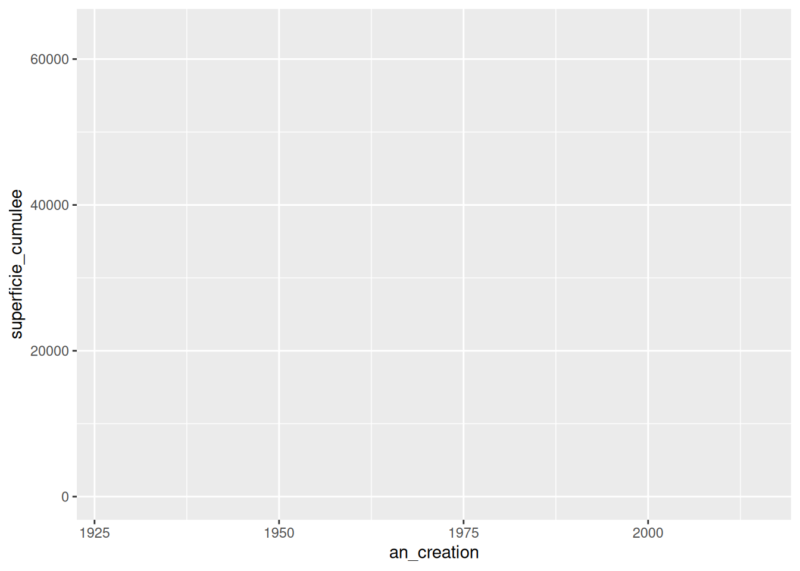
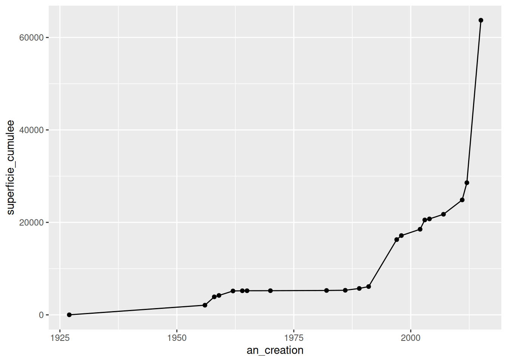
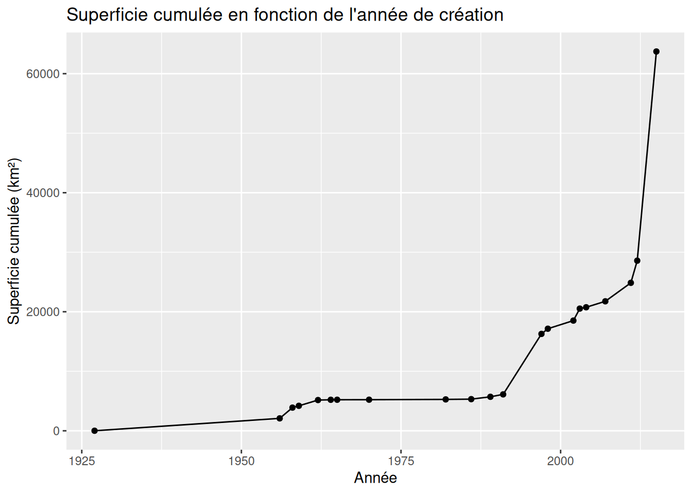
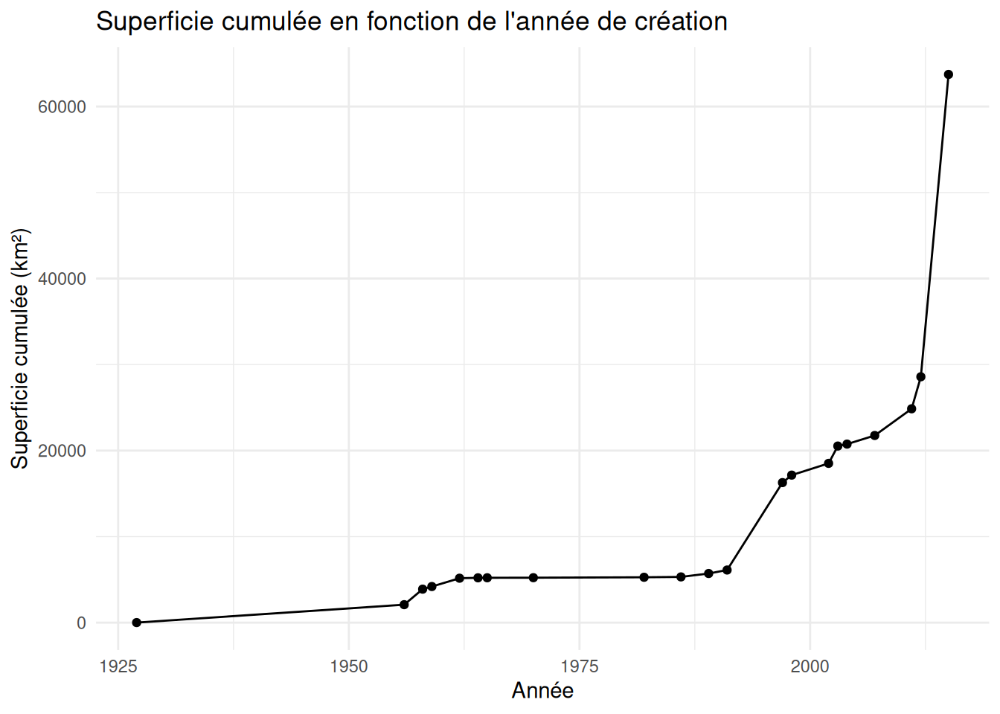

aire_totale <- 1250
annee_creation <- 20122 Fondamentaux pour l’utilisation de R
Ce chapitre ne vise pas une autonomie complète en programmation R. Son objectif est plus ciblé : donner les repères minimaux pour suivre les scripts utilisés dans le reste de la formation, modifier quelques lignes simples et vérifier que les sorties obtenues sont cohérentes avec la question posée.
L’idée directrice est la suivante : pendant la formation, on apprend à lire, exécuter, adapter et vérifier. La pratique approfondie de R se poursuivra ensuite avec des supports d’apprentissage dédiés et, si utile, avec des outils d’appui.
2.1 R et RStudio
R est le langage utilisé pour manipuler les données, produire des tableaux, estimer des modèles et tracer des graphiques. RStudio est l’environnement de travail dans lequel on ouvre un projet, on écrit des scripts, on exécute des lignes de code et on inspecte les objets.
Dans cette formation, les packages utiles sont supposés préinstallés. Cela permet de consacrer le temps de séance à la lecture et à l’analyse, pas à la configuration technique. Il reste néanmoins utile de distinguer deux opérations courantes :
install.packages()installe un package sur une machine ;library()charge un package dans la session en cours.
En pratique, dans les scripts de la formation, on utilisera surtout library().
2.2 Ce qu’il faut savoir faire ici
Pour suivre les chapitres appliqués, il suffit de maîtriser un petit nombre d’opérations :
- repérer le nom d’un objet ;
- lire les colonnes d’un tableau ;
- charger les packages nécessaires ;
- comprendre un pipeline simple ;
- filtrer, sélectionner, transformer et résumer des données ;
- lire un message d’erreur élémentaire.
En revanche, on ne cherchera pas ici à couvrir en détail :
- les fonctions utilisateur ;
- les boucles ;
- la programmation générale en R ;
- l’importation exhaustive de nombreux formats.
2.3 Lire l’environnement de travail
Dans RStudio, les quatre repères les plus utiles sont :
- le script, où l’on écrit et conserve le code ;
- la console, où le code s’exécute ;
- l’environnement, où l’on voit les objets créés ;
- l’explorateur de fichiers, où l’on retrouve scripts, données et sorties.
Il faut prendre l’habitude de lire un script de haut en bas en se posant trois questions simples :
- quels packages sont chargés ?
- quels objets sont créés ou importés ?
- quelle transformation ou quel résultat le bloc de code cherche-t-il à produire ?
2.4 Objets et noms d’objets
En R, on crée souvent un objet avec l’opérateur <-.
Un bon nom d’objet doit aider à comprendre ce qu’il contient. Il vaut mieux écrire annee_creation que x ou t1.
Les objets que vous rencontrerez le plus souvent dans cette formation sont :
- des vecteurs ;
- des tableaux de données ;
- des objets spatiaux ;
- des résultats de modèles.
2.4.1 Les fonctions
Les fonctions sont des ensembles d’instructions qui effectuent des tâches spécifiques. Elles permettent de réutiliser du code facilement.
- Créer une fonction : Utilisez le mot-clé
functionpour créer une fonction.
# Fonction qui additionne deux nombres
addition <- function(x, y) {
return(x + y)
}
resultat <- addition(3, 4) # Appel de la fonction
print(resultat) # Affiche 7[1] 7- Fonctions natives et packages : De nombreuses fonctions sont intégrées à R, et d’autres sont disponibles via des packages additionnels.
# Utilisation d'une fonction native
somme <- sum(5, 10)
print(somme) # Affiche 15[1] 152.5 Les opérateurs logiques
Les conditions reposent souvent sur des opérateurs logiques pour comparer des valeurs ou combiner des tests :
| Opérateur | Signification | Exemple |
|---|---|---|
== |
égal à | x == 5 |
!= |
différent de | x != 5 |
< |
strictement inférieur à | x < 5 |
<= |
inférieur ou égal à | x <= 5 |
> |
strictement supérieur à | x > 5 |
>= |
supérieur ou égal à | x >= 5 |
& |
ET logique (conjonction) | x > 5 & x < 10 |
| |
OU logique (disjonction) | x < 5 | x > 10 |
! |
NON logique (négation) | ! (x == 5) |
Ces opérateurs sont essentiels pour formuler des conditions dans vos scripts.
x <- 7
x > 5 & x < 10 # TRUE : les deux conditions sont vraies[1] TRUEx < 5 | x > 10 # FALSE : aucune des deux n’est vraie[1] FALSE!(x == 7) # FALSE : x est bien égal à 7[1] FALSE2.6 Charger des packages
Les scripts commencent souvent par une série d’appels à library().
library(tidyverse)
library(sf)Le premier réflexe n’est pas de mémoriser tous les packages, mais de repérer à quoi ils servent. Par exemple :
tidyversepour manipuler des tableaux ;sfpour les objets spatiaux vectoriels ;terrapour les rasters ;MatchItetcobaltpour l’appariement et ses diagnostics.
2.7 Lire un tableau et ses colonnes
Avant de transformer un tableau, il faut vérifier ce qu’il contient. Les questions les plus utiles sont souvent :
- quel est le nom de l’objet ?
- quelles colonnes sont disponibles ?
- quelles sont les premières lignes ?
parcs <- data.frame(
nom = c("Parc A", "Parc B", "Parc C"),
statut = c("protégé", "protégé", "non protégé"),
couverture_forestiere = c(0.82, 0.67, 0.51)
)
names(parcs)[1] "nom" "statut" "couverture_forestiere"head(parcs) nom statut couverture_forestiere
1 Parc A protégé 0.82
2 Parc B protégé 0.67
3 Parc C non protégé 0.51Ces deux commandes suffisent souvent à éviter des erreurs simples de nom de colonne ou de mauvais objet.
2.8 Le pipeline et les verbes utiles de dplyr
Dans cette formation, une grande partie du code prend la forme de pipelines avec %>%. On peut lire ce symbole comme “puis” ou “ensuite”.
L’idée est simple : on part d’un objet et on applique une série d’opérations successives.
library(tidyverse)
parcs %>%
filter(statut == "protégé") %>%
mutate(couverture_pct = couverture_forestiere * 100) %>%
select(nom, couverture_pct) nom couverture_pct
1 Parc A 82
2 Parc B 67Les verbes à reconnaître en priorité sont :
select()pour garder certaines colonnes ;filter()pour garder certaines lignes ;mutate()pour créer ou modifier une colonne ;group_by()pour définir des groupes ;summarise()pour produire un résumé.
Voici un second exemple avec agrégation.
observations <- data.frame(
groupe = c("traité", "traité", "contrôle", "contrôle"),
deforestation = c(1.2, 0.8, 2.1, 1.9)
)
observations %>%
group_by(groupe) %>%
summarise(deforestation_moyenne = mean(deforestation), .groups = "drop")# A tibble: 2 × 2
groupe deforestation_moyenne
<chr> <dbl>
1 contrôle 2
2 traité 1L’enjeu n’est pas d’écrire spontanément ce type de pipeline sans aide, mais de savoir le lire, repérer ce qu’il transforme et vérifier si le résultat répond bien à la question posée.
2.9 Import de données
Pour cette section, nous allons développer l’importation de différents types de fichiers couramment utilisés dans R pour la manipulation et l’analyse de données. R permet d’importer et de manipuler divers formats de fichiers, notamment CSV, Excel et fichiers texte.
2.9.2 Types de fichiers et comment les importer en ligne de code
- Fichiers CSV : Les fichiers CSV sont très populaires pour leur simplicité. Pour importer un fichier CSV, vous pouvez utiliser la fonction read.csv() ou read_csv() (package readr, partie du tidyverse).
library(readr)
AP_Vahatra <- read_csv("data/AP_Vahatra.csv")2. Fichiers Excel : Pour importer des fichiers Excel, on peut utiliser le package readxl. La fonction read_xlsx() permet d’importer un fichier au format .xlsx.
library(readxl)
Mon_objet_R <- read_xlsx("data/mon_fichier.xlsx")3. Fichiers texte : Les fichiers texte peuvent être importés avec read.table() ou read_delim() (pour des délimiteurs personnalisés).
AP_Vahatra <- read_delim("data/mon_fichier.txt", delim = "\t")2.10 Traitement simple
AP_superficie_annees <- AP_Vahatra %>%
mutate(superficie_km2 = hectares / 100) %>%
group_by(an_creation) %>%
summarise(superficie_nouvelle = sum(superficie_km2, na.rm = TRUE)) %>%
arrange(an_creation) %>%
mutate(superficie_cumulee = cumsum(superficie_nouvelle))2.11 Production de graphiques avec ggplot2
Pour produire des graphiques de qualité avec R, nous utilisons souvent le package ggplot2. Ce package repose sur une approche appelée “la grammaire des graphiques”. Cette grammaire est une façon systématique de construire des visualisations, en combinant différents composants graphiques, comme des axes, des légendes, des points, des lignes, etc. Elle offre une grande flexibilité et permet de créer des graphiques complexes de manière progressive.
2.11.1 Philosophie de la “grammaire des graphiques”
La grammaire des graphiques est une méthode de pensée pour créer des visualisations. Elle repose sur l’idée que tout graphique peut être décomposé en une série de couches. Par exemple :
- Données : La première étape consiste à spécifier les données à utiliser pour le graphique.
- Aesthetic mappings (Mappings esthétiques) : Cela consiste à indiquer comment les variables des données seront représentées visuellement, par exemple, quel axe représente quelle variable, ou quelles couleurs représentent quelles catégories.
- Geometries (Géométries) : Chaque graphique est composé de formes géométriques, comme des points, des lignes, des barres, etc. Ces géométries déterminent la manière dont les données seront visualisées.
- Facettes : Cette étape permet de subdiviser le graphique en plusieurs sous-graphiques basés sur une variable, facilitant ainsi la comparaison entre catégories.
- Statistiques : Certaines visualisations nécessitent des transformations statistiques, comme l’ajout de moyennes, de tendances ou d’intervalles de confiance.
- Coordonnées : Il s’agit de définir les systèmes de coordonnées, tels que les axes cartésiens ou polaires.
- Thème : Enfin, le thème est utilisé pour définir l’apparence générale du graphique, par exemple, les couleurs de fond, la taille des polices, etc.
En combinant ces différentes couches, ggplot2 permet de construire des visualisations claires et personnalisées, adaptées aux besoins spécifiques de l’analyse.
2.11.2 Introduction à ggplot2
Le package ggplot2 suit cette logique en permettant d’ajouter chaque composant graphique avec le signe +. Voici une approche progressive pour comprendre ggplot2 :
- Créer la base du graphique :
La première étape consiste à spécifier les données et les mappings esthétiques. Par exemple, nous allons indiquer que l’axe des abscisses (x) représente l’année de création (an_creation) et l’axe des ordonnées (y) représente la superficie cumulée (superficie_cumulee).
ggplot(data = AP_superficie_annees, aes(x = an_creation, y = superficie_cumulee))
- Ajouter des géométries :
Pour visualiser les données, nous ajoutons des points (geom_point()) et des lignes (geom_line()).
ggplot(data = AP_superficie_annees, aes(x = an_creation, y = superficie_cumulee)) +
geom_point() +
geom_line()
- Ajouter des labels :
Pour rendre le graphique plus compréhensible, nous ajoutons des labels pour les axes et un titre.
ggplot(data = AP_superficie_annees, aes(x = an_creation, y = superficie_cumulee)) +
geom_point() +
geom_line() +
labs(x = "Année", y = "Superficie cumulée (km²)",
title = "Superficie cumulée en fonction de l'année de création")
- Appliquer un thème :
Le thème permet de personnaliser l’apparence générale du graphique. Ici, nous utilisons theme_minimal() pour une apparence épurée.
ggplot(data = AP_superficie_annees, aes(x = an_creation, y = superficie_cumulee)) +
geom_point() +
geom_line() +
labs(x = "Année", y = "Superficie cumulée (km²)",
title = "Superficie cumulée en fonction de l'année de création") +
theme_minimal()
2.11.3 Exercice : Créer un graphique avec ggplot2
Créer un graphique en nuages de points : Utilisez
ggplot2pour créer un graphique de points qui montre la somme des superficies des aires protégées en fonction de leur année de création.Ajouter des lignes de tendance : Ajoutez une une ligne reliant les points et une ligne de tendance (
geom_smooth()).
Ces étapes vous permettront de comprendre progressivement comment construire des graphiques en utilisant la grammaire des graphiques, et d’explorer différentes façons de visualiser vos données.
## Lire une erreur simple
Quand un script échoue, il faut commencer par lire le message affiché au lieu de modifier le code au hasard. Trois causes fréquentes suffisent à bloquer une grande partie des scripts débutants :
- un objet n’existe pas ;
- une colonne est mal orthographiée ;
- un package n’a pas été chargé.
La bonne réaction est souvent de vérifier, dans cet ordre :
- le nom de l’objet ;
- les noms de colonnes avec
names(); - la présence de
library()pour le package concerné.
2.12 Ce qu’il faut retenir pour la suite
Si vous savez :
- charger les packages ;
- identifier les objets ;
- lire les noms de colonnes ;
- comprendre les verbes
select,filter,mutate,group_byetsummarise; - relire un message d’erreur simple ;
alors vous avez l’essentiel pour suivre les chapitres appliqués qui suivent.
2.13 Ressources pour poursuivre la pratique
La réduction de ce chapitre signifie aussi que l’apprentissage de R doit se poursuivre en dehors de la séance. Quelques ressources utiles :
Des outils d’appui comme Posit Assistant peuvent aussi aider à reprendre un script, retrouver une syntaxe ou interpréter un message d’erreur, mais ils ne remplacent ni la vérification des objets réellement chargés, ni la compréhension de la question analytique traitée.